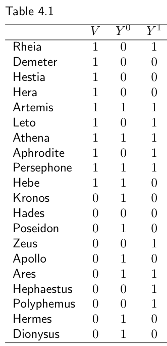
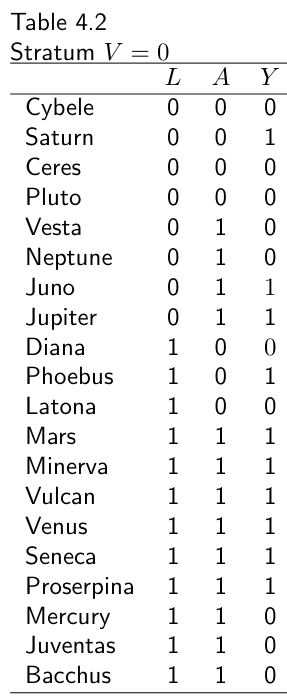
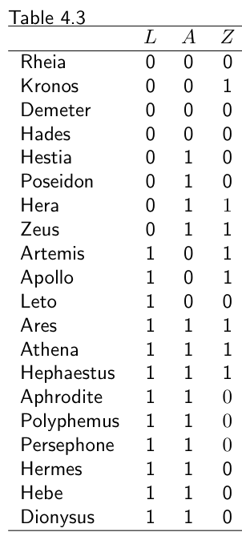
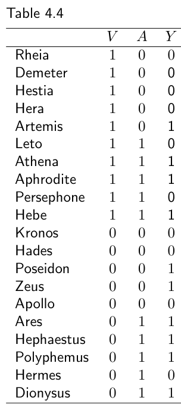

第一部分 · 无模型的因果推断 · Part I — Causal inference without models
第 4 章 · 效应修饰
Hernán MA, Robins JM（2020）. Causal Inference: What If. Chapter 4. 本页为中文全文翻译，附译注。
到目前为止，我们盯的都是整个目标人群里的平均因果效应。可很多因果问题问的是人群中的某些子集。再想想那个因果问题："一个人抬头看天，会不会让路人也跟着抬头看天？"你也许想分别算出城市居民与外来访客中抬头看天的平均因果效应，而不是所有行人中的平均效应。
究竟该算整个人群的平均效应，还是某个子集的，取决于推断的目标。有时你并不关心效应在人群各群体之间怎么变化。举个例子：假设你是一位决策者，正在考虑是否推行一项全国性的自来水加氟项目。因为这项公共卫生干预会覆盖人群中的所有家庭，你主要关心的是整个人群中的平均因果效应，而不是某个特定子集。只有当干预可以被精准投放到不同子集，或者当研究结果需要外推到其他人群时，你才会去刻画因果效应如何随人群子集而变化。
本章要强调的是：根本不存在"处理的因果效应"这回事。因果效应取决于所研究的那个特定人群的特征。
4.1 治疗效应的异质性

V = 1 为女性，V = 0 为男性）。前 10 行为女性，括号内依次为 Ya=0 与 Ya=1：Rheia（0, 1）、Demeter（0, 0）、Hestia（0, 0）、Hera（0, 0）、Artemis（1, 1）、Leto（0, 1）、Athena（1, 1）、Aphrodite（0, 1）、Persephone（1, 1）、Hebe（1, 0）。后 10 行为男性：Kronos（1, 0）、Hades（0, 0）、Poseidon（1, 0）、Zeus（0, 1）、Apollo（1, 0）、Ares（1, 1）、Hephaestus（0, 1）、Polyphemus（0, 1）、Hermes（1, 0）、Dionysus（1, 0）。（希腊神话人物，作者拿他们当例子用。）本书开篇时，我们计算的是心脏移植 A 对死亡 Y 的平均因果效应，研究对象是 Zeus 大家庭的 20 名成员。用的是表 1.1 的数据，那张表的各列给出了（一般无法观测的）反事实结局 Ya=0 与 Ya=1 的个体取值。看完表 1.1 的数据，我们得出结论：平均因果效应为零。如果人人都接受心脏移植，人群中会有一半人死去，Pr[Ya=1 = 1] = 10/20 = 0.5；如果没人接受心脏移植，人群中也会有一半人死去，Pr[Ya=0 = 1] = 10/20 = 0.5。因果风险比 Pr[Ya=1 = 1]/Pr[Ya=0 = 1] 为 0.5/0.5 = 1，因果风险差 Pr[Ya=1 = 1] − Pr[Ya=0 = 1] 为 0.5 − 0.5 = 0。
现在我们考虑两个新的因果问题：A 对 Y 的平均因果效应在女性中是多少？在男性中是多少？要回答它们，我们用表 4.1，它包含与表 1.1 相同的信息，外加一列性别指示变量 V：V = 1 表示女性，V = 0 表示男性。为方便起见，我们把表格重排了一下，让女性占前 10 行、男性占后 10 行。
先算女性中的平均因果效应。为此，我们要把分析限制在 V = 1 的前 10 行。在这个人群子集中，处理下的死亡风险为 Pr[Ya=1 = 1|V = 1] = 6/10 = 0.6，不处理下的死亡风险为 Pr[Ya=0 = 1|V = 1] = 4/10 = 0.4。因果风险比是 0.6/0.4 = 1.5，因果风险差是 0.6 − 0.4 = 0.2。也就是说，平均而言心脏移植 A 会提高女性死亡 Y 的风险。
接下来算男性中的平均因果效应。为此，要把分析限制在 V = 0 的后 10 行。这个子集中，处理下的死亡风险为 Pr[Ya=1 = 1|V = 0] = 4/10 = 0.4，不处理下的死亡风险为 Pr[Ya=0 = 1|V = 0] = 6/10 = 0.6。因果风险比是 0.4/0.6 = 2/3，因果风险差是 0.4 − 0.6 = −0.2。也就是说，平均而言心脏移植 A 会降低男性死亡 Y 的风险。
我们的例子说明：整个人群中平均因果效应为零，并不意味着人群某个特定子集中的平均因果效应为零。在表 4.1 中，"无平均因果效应"这一零假设对整个人群成立，但对分开来看的男性或女性都不成立。碰巧的是，男性与女性中的平均因果效应大小相等、方向相反。由于两性各占 50%，在考察整个人群时两个效应恰好完全抵消。
边注 本章我们对"男性""女性"两个词的用法，某种意义上算是对记号的轻微滥用，因为这些神祇是男神与女神，而不是男人和女人。
虽然效应恰好抵消大概并不常见，但由于个体对处理的易感性存在差异，个体因果效应的异质性通常是意料之中的。例外发生在"无因果效应"这一锐零假设（sharp null hypothesis of no causal effect）成立的时候：此时不存在效应异质性，因为对每个个体而言效应都是零，因此人群任何子集中的平均因果效应也都是零。
现在我们可以给出效应修饰因子的定义了。当 A 对 Y 的平均因果效应随 V 的取值水平而变化时，我们说 V 是 A 对 Y 效应的修饰因子。由于平均因果效应可以用不同的效应尺度来度量（如风险差、风险比），是否存在效应修饰取决于所用的效应尺度。例如，在加性尺度上，性别 V 是心脏移植 A 对死亡 Y 效应的修饰因子，因为因果风险差随 V 的水平而变化；在乘性尺度上，性别 V 也是修饰因子，因为因果风险比随 V 的水平而变化。我们只把那些不受处理 A 影响的变量 V 当作效应修饰因子来考虑。
边注 关于效应修饰因子的结构性分类，见第 6.6 节。
加性效应修饰：E[Ya=1 − Ya=0|V = 1] ≠ E[Ya=1 − Ya=0|V = 0]
乘性效应修饰：E[Ya=1|V = 1] / E[Ya=0|V = 1] ≠ E[Ya=1|V = 0] / E[Ya=0|V = 0]
边注 我们不讨论比值比尺度上的效应修饰，因为在因果推断中，比值比很少（如果有的话）是我们关心的参数。
在表 4.1 中，女性的因果风险比大于 1（V = 1），男性的小于 1（V = 0）。类似地，女性的因果风险差大于 0，男性的小于 0。也就是说，这里存在定性效应修饰（qualitative effect modification），因为 V = 1 与 V = 0 两个子集中的平均因果效应方向相反。在定性效应修饰存在的情况下，加性效应修饰蕴含乘性效应修饰，反之亦然。反过来却不成立：在不存在定性效应修饰时，可能在一个尺度（比如乘性）上存在效应修饰，而在另一个尺度（比如加性）上并不存在。为说明这一点，假设在第二项研究里，我们算出了下面这些量。在这项研究中，V 的加性效应修饰不存在，因为 V = 1 个体中的因果风险差与 V = 0 个体中的相等，即 0.9 − 0.8 = 0.1 = 0.2 − 0.1。然而这项研究中存在 V 的乘性效应修饰，因为 V = 1 个体中的因果风险比与 V = 0 个体中的不同，即 0.9/0.8 = 1.1 ≠ 0.2/0.1 = 2。既然一般来说，不指明所用的效应尺度（风险差、风险比）就无法断言存在或不存在效应修饰，有些作者便使用"效应尺度修饰"（effect-measure modification）这个更明确的名字，而不是笼统的"效应修饰"，以强调这一概念对效应尺度选择的依赖。
边注 V 的"有乘性、无加性"效应修饰：Pr[Ya=0 = 1|V = 1] = 0.8，Pr[Ya=1 = 1|V = 1] = 0.9，Pr[Ya=0 = 1|V = 0] = 0.1，Pr[Ya=1 = 1|V = 0] = 0.2。
4.2 用分层识别效应修饰

V = 0 层（罗马人）的数据。L = 0 非危重者 8 人：Cybele（A=0, Y=0）、Saturn（0, 1）、Ceres（0, 0）、Pluto（0, 0）、Vesta（1, 0）、Neptune（1, 0）、Juno（1, 1）、Jupiter（1, 1）。L = 1 危重者 12 人：Diana（0, 0）、Phoebus（0, 1）、Latona（0, 0）、Mars（1, 1）、Minerva（1, 1）、Vulcan（1, 1）、Venus（1, 1）、Seneca（1, 1）、Proserpina（1, 1）、Mercury（1, 0）、Juventas（1, 0）、Bacchus（1, 0）。括号内依次为处理与死亡结局。边注 分层：在变量 V 的每一层（stratum）内分别计算 A 对 Y 的因果效应。对二值的 V，两个分层因果风险差为 Pr[Ya=1 = 1|V = 1] − Pr[Ya=0 = 1|V = 1] 与 Pr[Ya=1 = 1|V = 0] − Pr[Ya=0 = 1|V = 0]。
分层分析是识别效应修饰的自然做法。要判断 V 是否修饰 A 对 Y 的效应，就在变量 V 的每个水平（层）上分别计算 A 对 Y 的因果效应。上一节里，我们用表 4.1 的数据算出了心脏移植 A 对死亡 Y 在性别 V 两个层中的因果效应。由于两层的因果效应（在加性与乘性两个尺度上都）不同，我们便说 V 对 A 对 Y 的效应存在（加性与乘性的）效应修饰。
但表 4.1 里的数据并不是现实中常见的数据。现实中看到的不是每人两列反事实结局 Ya=1 与 Ya=0，而是每人两列处理水平 A 与观测结局 Y。反事实结局拿不到，会怎样影响用分层来检出效应修饰？答案取决于研究设计。
先考虑一项理想的边际随机化试验。在第 2 章我们说明过，撇开随机变异不谈，平均因果效应可以用观测数据算出来：因果风险差 Pr[Ya=1 = 1] − Pr[Ya=0 = 1] 等于观测到的关联风险差 Pr[Y = 1|A = 1] − Pr[Y = 1|A = 0]。同样的推理可以推广到变量 V 的每一层，因为只要处理分配是随机的、且不依赖任何条件，那么可交换性在人群的每个子集中都应成立。因此女性中的因果风险差 Pr[Ya=1 = 1|V = 1] − Pr[Ya=0 = 1|V = 1] 就等于女性中的关联风险差 Pr[Y = 1|A = 1, V = 1] − Pr[Y = 1|A = 0, V = 1]，男性同理。于是，要在理想的无条件随机化试验中识别 V 的效应修饰，只需做一次分层分析，也就是在 V 的各个水平上计算关联度量。分层可以用来计算人群子集中的平均因果效应，但算不了个体效应（见精细辨析 2.1 与 3.2）。
现在考虑一项理想的条件随机化试验。在 40 人的人群中，心脏移植 A 被随机分配给危重者（L = 1）的概率是 0.75，分配给其他人（L = 0）的概率是 0.50。这 40 人可按护照分为两个国籍：20 位希腊人（V = 1）与 20 位罗马人（V = 0）。20 位希腊人关于 L、A 与死亡 Y 的数据见表 2.2（与表 3.1 相同），20 位罗马人的数据见表 4.2。处理下的人群风险 Pr[Ya=1 = 1] 为 0.55，不处理下的人群风险 Pr[Ya=0 = 1] 为 0.40。（两个风险都可以用标准化或 IP 加权轻松算出，细节留给读者。）因此，心脏移植 A 对死亡 Y 的平均因果效应在风险差尺度上是 0.55 − 0.40 = 0.15，在风险比尺度上是 0.55/0.40 = 1.375。在这个人群里，心脏移植提高了死亡风险。
边注 正如上一章所讨论的，如果这些数据来自一项我们相信满足条件可交换性 Ya ⊥⊥ A|L 的观察性研究，因果效应的计算结果也是一样的。
现在我们讨论如何做分层分析，以考察国籍 V 是否修饰 A 对 Y 的效应。目标是算出希腊人中的因果效应 Pr[Ya=1 = 1|V = 1] − Pr[Ya=0 = 1|V = 1]，以及罗马人中的因果效应 Pr[Ya=1 = 1|V = 0] − Pr[Ya=0 = 1|V = 0]。如果这两个因果风险差不同，我们就说存在国籍 V 的加性效应修饰；如果两个因果风险比不同，就存在乘性效应修饰。
计算每层 v 上条件风险 Pr[Ya=1 = 1|V = v] 与 Pr[Ya=0 = 1|V = v] 的过程分两步：1）按 V 分层；2）按 L 做标准化（或等价地，用依赖于 L 的权重做 IP 加权）。希腊人层（V = 1）中的标准化风险我们在第 2 章已经算过：因果风险差为 0，因果风险比为 1。用同样的做法处理罗马人层（V = 0），我们算出 Pr[Ya=1 = 1|V = 0] = 0.6 与 Pr[Ya=0 = 1|V = 0] = 0.3。（细节同样留给读者。）因此，V = 0 层中的因果风险差是 0.3，因果风险比是 2。由于这些效应尺度与 V = 1 层中的不同，我们说存在国籍 V 对移植 A 对死亡 Y 效应的加性与乘性效应修饰。这不是定性效应修饰，因为在 V = 0 与 V = 1 两层中，效应要么有害、要么为零，方向并没有相反。
边注 第 2 步在 V 恰好等于保证条件可交换性所需的那些变量 L 时可以省略（见第 4.4 节）。
我们已经证明，在我们的研究人群中，国籍 V 修饰了心脏移植 A 对死亡风险 Y 的效应。但我们并未对这种效应修饰背后的因果机制作任何断言。事实上，国籍完全可能只是那个真正起作用的因果因子的标记物。举例来说，假设希腊的心脏手术质量比罗马更好，那么我们就会发现国籍的效应修饰。而一项旨在提高罗马心脏手术质量的干预，则可以消除由护照定义的国籍所带来的因果效应修饰。每当我们想强调这种区别时，就会把国籍称为替代效应修饰因子（surrogate effect modifier），把医疗质量称为因果效应修饰因子（causal effect modifier）。
边注 关于替代效应修饰因子与因果效应修饰因子的图示表示，见第 6.6 节。
因此，我们使用"由 V 造成的效应修饰"这个说法，并不必然意味着 V 在效应修饰中扮演了因果角色。为避免潜在混淆，有些作者宁愿用更中性的说法"V 各层之间的效应异质性"，而不是"V 的效应修饰"。下一章将引入"交互作用"（interaction）这个与效应修饰相关、但会给所涉变量赋予因果角色的概念。
4.3 为什么要在乎效应修饰
研究者之所以想识别效应修饰、之所以即便在随机化试验中也坚持收集处理前描述变量 V 的数据，有很多彼此相关的理由。
第一，如果某个因素 V 修饰了处理 A 对结局 Y 的效应，那么在 V 患病率（prevalence）不同的人群中，平均因果效应就会不同。举例来说，表 4.1 那个总体人群中，平均因果效应在女性身上有害、在男性身上有益，即存在定性效应修饰。由于两性各占 50%，两性间方向相反、大小相等的有害与有益效应恰好抵消，整个人群的平均因果效应为零。然而，假设我们是在一个女性比例更高的人群（比如大学毕业生）里做这项研究，整个人群的平均因果效应就会是有害的。在非定性效应修饰的情况下，平均因果效应的大小（而非方向）会随人群而变化。石棉暴露的效应就是一个非定性效应修饰的例子：它对吸烟者与非吸烟者的效应不同；全民医保的效应也是如此：它对低收入家庭与高收入家庭的效应不同。
换句话说，一个给定人群中的平均因果效应取决于该人群中个体因果效应的分布。一般而言，不存在所谓"处理 A 对结局 Y（某时期）的平均因果效应"，只存在"在具有某种效应修饰因子构成的人群中，处理 A 对结局 Y 的平均因果效应"。
把在一个人群中算出的因果效应外推到另一个人群，在文献中称为因果推断的可移植性（transportability，见精细辨析 4.2）。在我们的例子里，心脏移植 A 对死亡风险 Y 的因果效应在男性与女性之间不同，在罗马人与希腊人之间也不同。因此，本人群中的平均因果效应未必能移植到效应修饰因子构成不同的其他人群，比如性别与国籍构成不同的那些人群。
边注 有作者把不可移植性称作缺乏外部效度（lack of external validity）。Hernán 与 VanderWeele（2011）、Pearl 与 Bareinboim（2014）、Dahabreh 与 Hernán（2019）等讨论了效应修饰与跨人群搬运推断之间的关系。
在由效应修饰因子所定义的各层中算出的条件因果效应，可能比整个人群中的因果效应更具可移植性；但没法保证一个人群中的条件效应度量等于另一个人群中的条件效应度量。之所以如此，是因为可能还存在其他未测量或未知的因果效应修饰因子，它们在两个人群中的条件分布不同（或出于精细辨析 4.2 描述的其他原因）。这些未测量的效应修饰因子并不是为达成可交换性所必需的变量，只是结局的风险因素。因此，效应的跨人群可移植性比在单一人群中识别因果效应更困难：你不只要按"所有为达成可交换性所需的东西"分层（关于这些，你或许还能通过访谈那些决定如何分配处理的人来获得信息），还得按那些关于它们几乎没有信息的、结局的未测量成因来分层。
所以，效应的可移植性是一个无法验证的假定，它高度依赖领域知识。多数专家会同意：把一个家庭年收入提高 100 美元对健康的影响（无论在加性还是乘性尺度上）不能从尼日尔搬到荷兰；而降胆固醇药物对欧洲人的健康影响可以搬到加拿大人身上。
边注 可移植性可能不成问题的一个场景：Smith 与 Pell（2003）没能识别出"自由落体挑战"（比如从高空跳伞）之后使用降落伞对死亡效应有哪些重要修饰因子。他们因此得出结论：只在特定人群中开展降落伞使用的随机化试验，并不会损害研究结论对其他人群的可移植性。
第二，评估效应修饰是否存在，有助于找出哪些人群组会从某项干预中获益最多。在表 4.1 的例子里，处理 A 对结局 Y 的平均因果效应为零，但处理 A 在男性（V = 0）中有益、在女性（V = 1）中有害。举例来说，如果医生知道存在性别的定性效应修饰，那么在没有额外信息的情况下，他们只会对恰好是男性的下一位患者施治。当像第二个例子那样存在"有乘性、无加性"的效应修饰时，情况就复杂一些。此时处理在 V = 0 的个体中把结局风险降低 10%，在 V = 1 的个体中也降低 10%，也就是说 V 不存在加性效应修饰，因为 V 各层中的因果风险差都是 0.1。因此，尽管存在乘性效应修饰，对所有患者实施干预在降低风险上对 V 的两层同样有效。事实上，只要 V 至少有一层中因果效应非零，且反事实风险 Pr[Ya=0 = 1|V = v] 随 v 变化，那么在加性或乘性尺度上就必然存在效应修饰。
要识别"哪些人群会获益最多"，合适的是加性而非乘性效应修饰。在不存在加性效应修饰的情况下，得知存在乘性效应修饰对决策帮助不大。
边注 多位作者（如 Blot 与 Day 1979；Rothman 等 1980；Saracci 1980）把加性效应修饰称作公共卫生意义上"那个感兴趣的修饰"。
在第二个例子中，乘性效应修饰的出现是可以预期的，因为 V = 1 层中不处理下的风险高达 0.8。于是 V = 1 层中因果风险比的最大可能取值就是 1/0.8 = 1.25，它必定与 V = 0 层中的因果风险比 2 不同。在这类情形下，乘性效应修饰源自不处理下风险 Pr[Ya=0 = 1|V = v] 在 V 各层之间的差异。因此，一般规律是：与其只报告比值或差值，不如在 V 的每一层 v 上把（绝对量级的）反事实风险 Pr[Ya=1 = 1|V = v] 与 Pr[Ya=0 = 1|V = v] 都报出来，信息量更大。
最后，识别效应修饰可能有助于理解导致结局的生物学、社会或其他机制。举例来说，未行包皮环切男性的 HIV 感染风险高于已行环切者，这一发现可能为理解该疾病提供新的线索。识别效应修饰也可能是刻画两种处理相互之间的相互作用的第一步。"效应修饰"与"交互作用"这两个术语在科学文献中有时被当作同义词。本章聚焦于"效应修饰"；下一章把"交互作用"描述为一个与效应修饰相关、但并不相同的因果概念。
4.4 分层作为一种调整方式
直到本章之前，我们唯一的目标都是计算整个人群中的平均因果效应。在没有边际随机化的情况下，要达成这个目标，就得为保证处理组与未处理组条件可交换的那些变量 L 加以调整。举例来说，在第 2 章我们算出心脏移植 A 对死亡 Y 的平均因果效应为零，即因果风险比 Pr[Ya=1 = 1]/Pr[Ya=0 = 1] = 1。我们用表 2.2 的数据，通过标准化与 IP 加权两种方式调整了因素 L。
本章给分析加上了另一个潜在目标：识别由变量 V 带来的效应修饰。要达成这个目标，我们得按 V 分层，同时再为 L 调整。举例来说，本章我们按国籍 V 分层并为 L 调整，从而确定心脏移植 A 对死亡 Y 的平均因果效应在希腊人与罗马人之间不同。
归纳起来：标准化（或 IP 加权）用来为 L 调整，分层用来识别由 V 造成的效应修饰。
但分层并不总是用来识别 V 的效应修饰。实践中，分层常常被当作标准化（与 IP 加权）的替代手段来为 L 调整。事实上，把分层用作调整 L 的方法如此普遍，以至于许多研究者把"分层"与"调整"当成同义词。举例来说：假设你请一位流行病学家为因素 L 做调整，以计算心脏移植 A 对死亡 Y 的效应。她多半会立刻把表 2.2 拆成两张子表——一张限于 L = 0 的个体，另一张限于 L = 1 的个体——然后把每张表里的效应度量（比如风险比）报给你。也就是说，她会算出 l = 0 与 l = 1 两个 l 下都等于 1 的风险比 Pr[Y = 1|A = 1, L = l] / Pr[Y = 1|A = 0, L = l] = 1。
在给定 L 的条件可交换性之下，这两个分层关联风险比可以被赋予因果解释：它们分别度量由 L = 0 与 L = 1 所定义的人群子集中的平均因果效应。它们是条件效应度量。相比之下，我们在第 2 章算出的那个等于 1 的风险比是边际（无条件）效应度量。在这个特定例子中，三个风险比——两个条件的、一个边际的——恰好相等，因为不存在由 L 造成的效应修饰。分层必然产生多个分层特异的效应度量（由变量 L 定义的每一层一个），每个都量化一个互不重叠的人群子集中的平均因果效应；但一般而言，它们中没有一个量化的是整个人群中的平均因果效应。这正是我们在第 2 章描述计算人群平均因果效应的方法时没有采用分层的原因，我们当时聚焦的是标准化与 IP 加权。
边注 在给定 L 的条件可交换性之下，子集 L = l 中的风险比度量的是该子集中的平均因果效应，因为若 Ya ⊥⊥ A|L，则 Pr[Y = 1|A = a, L = 0] = Pr[Ya=1 = 1|L = 0]。
此外，与标准化和 IP 加权不同，用分层来调整需要在由保证条件可交换性所需的全部变量 L 的组合所定义的人群子集中逐一计算效应度量。举例来说，在表 2.2 与表 4.2 的人群中用分层估计心脏移植的效应，必须分别计算"罗马人且 L = 1""希腊人且 L = 1""罗马人且 L = 0""希腊人且 L = 0"四处的效应；但你不能简单地通过算 V = 0 层的关联就得到罗马人的效应，因为国籍 V 本身不足以保证条件可交换性。也就是说，使用分层会迫使你去评估所有为达成条件可交换性所需的 L 变量的效应修饰，不管你对这种效应修饰是否感兴趣。相比之下，先按 V 分层、再用 IP 加权或标准化去调整 L，则允许你把可交换性与效应修饰这两件事分开处理，如上文所述。
与分层相关的其他问题还有：某些效应度量（的比值比）不可塌缩（见精细辨析 4.3），以及不恰当的调整——在时变处理的情形下，为保证可交换性而必须调整那些受既往处理影响的时变变量 L——会带来偏倚（见第三部分）。
边注 考虑时变处理时，即使有可交换性、可阳性性与明确的干预，分层特异的效应度量也未必有因果解释（Robins 1986，1987）。见第 20 章。
有时研究者只在 L 所定义的某些层中计算因果效应，也就是说，有些层干脆不算分层特异的效应度量。这种做法称为限制（restriction）。就因果推断而言，分层无非是把限制这一操作应用到若干个穷尽且互不重叠的人群子集上，并要求在每个子集内成立可交换性。当人群中某些层违反可阳性性时，就用限制把因果推断限定在原人群中那些可阳性成立的层内（见第 3 章）。
边注 分层除了可交换性之外还要求可阳性：在某些子集 L = l 中只有被处理者（或只有未被处理者）时，无法计算因果效应。
4.5 匹配作为另一种调整方式
L：L = 0 的 4 位未处理者分别匹配 4 位 L = 0 的处理者，L = 1 的 3 位未处理者分别匹配 3 位 L = 1 的处理者。匹配是另一种调整方法。匹配的目标是构造出一个人群子集，使得变量 L 在处理组与未处理组中的分布相同。作为例子，我们取表 2.2 中的心脏移植例子，那里变量 L 足以达成条件可交换性。对于每一位非危重的未处理个体（A = 0, L = 0），随机挑选一位非危重的处理个体（A = 1, L = 0）；对于每一位危重的未处理个体（A = 0, L = 1），随机挑选一位危重的处理个体（A = 1, L = 1）。我们把每一位未处理个体与她所对应的那位处理个体称为一个匹配对（matched pair），把变量 L 称为匹配因子（matching factor）。假设我们组成了下面这 7 个匹配对：L = 0 的 Rheia-Hestia、Kronos-Poseidon、Demeter-Hera、Hades-Zeus，以及 L = 1 的 Artemis-Ares、Apollo-Aphrodite、Leto-Hermes。人群中全部的未处理者都被选入，而处理者只选了一个样本。
在这个由匹配对构成的人群子集中，危重（L = 1）个体的比例按设计在处理组与未处理组中相同，都是 3/7。为了构造这个匹配人群，我们用处理者中的一个子集替换了人群中的全部处理者，这个子集里匹配因子 L 的分布与未处理组中相同。在给定 L 的条件可交换性假定下，这一操作的结果是：匹配人群中处理组与未处理组之间成立（无条件）可交换性。
由于匹配人群中处理组与未处理组可交换，两者的平均结局可以直接比较：处理组中的风险为 3/7，未处理组中的风险也是 3/7，于是因果风险比为 1。注意，匹配保证了匹配人群中可阳性性成立，因为那些只有处理者（或只有未处理者）的层被排除在分析之外。
人们通常选择个体数较少的那个组（在我们的例子中即未处理组），用另一个组（例子中即处理组）来为它寻找匹配对象。被选中的那个组定义了计算因果效应的那个子人群。上一段我们算的是未处理组中的效应。如果在 L 的所有层中处理者都比未处理者少，我们一般就算处理组中的效应。另外，匹配也不必是一对一的（匹配对），也可以是一对多的（匹配集）。
边注 我们关于匹配的讨论只适用于队列研究。在病例-对照设计（见第 8 章）中，人们通常匹配的是病例与非病例（即对照），而不是处理组与未处理组。即便匹配因子足以保证条件可交换性，对病例与对照做匹配也不会使匹配人群中处理组与未处理组之间成立无条件可交换性。要估计条件（分层特异）的效应度量，还得为匹配因子再做分层调整。
在许多应用中，L 是若干个变量构成的向量。这时就要对每一个由 L 中全部变量取值组合所定义的层中的每一位未处理个体，从同一层里随机挑选一位（或几位）处理个体。
匹配可以用来构造出 L 具有任意指定分布的匹配人群，而不只是处理组或未处理组中的分布。所关注的分布既可以通过前面所说的个体匹配来实现，也可以通过频数匹配（frequency matching）来实现。后者的一例是：先以这样的方式随机挑选处理个体，使其中 70% 的人 L = 1，然后对未处理者重复同样的步骤。
边注 匹配因子的个数越多，某个个体找不到精确匹配的概率就越大。在这类情形下如何寻找近似匹配，有大量文献（超出本书范围）可供参考；入门读物见 Stuart（2010）。
由于匹配人群是原研究人群的一个子集，匹配后研究人群中因果效应修饰因子的分布，一般会与匹配前的研究人群不同，如下一节将要讨论的那样。
4.6 效应修饰与调整方法
标准化、IP 加权、分层/限制与匹配，是估计平均因果效应的四种不同做法，但它们估计的是不同类型的因果效应。这四种做法可以按所估计效应的类型分成两组：标准化与 IP 加权既可以算边际效应，也可以算条件效应；分层/限制与匹配则只能在人群的某些子集中算条件效应。四种做法都要求可交换性与可阳性，但这些条件需要在人群的哪些子集中成立，取决于所关心的因果效应。举例来说，要计算 L = l 个体中的条件效应，上述任一方法都只要求该子集内成立可交换性与可阳性；而要估计整个人群中的边际效应，则要求在 L 的所有水平上都成立。
在不存在效应修饰的情况下，用这四种做法算出的效应度量（风险比或风险差）是相等的。举例来说，我们得出结论：心脏移植 A 对死亡 Y 的平均因果效应为零——在表 2.2 的整个人群中（标准化与 IP 加权）、在危重 L = 1 与非危重 L = 0 两个人群子集中（分层），以及在未处理组中（匹配），结论都是如此。所有方法都得到因果风险比等于 1。然而，一般而言，用这四种做法算出的效应度量并不相等。
为了展示效应可以怎样不同，我们用表 4.3 的数据计算心脏移植 A 对高血压 Z（1：是，0：否）的效应。我们假定 Za ⊥⊥ A|L 与可阳性性成立。我们使用风险比尺度，不为什么特别的原因。

L = 0 的 8 人：Rheia（A=0, Z=0）、Kronos（0, 1）、Demeter（0, 0）、Hades（0, 0）、Hestia（1, 0）、Poseidon（1, 0）、Hera（1, 1）、Zeus（1, 1）。L = 1 的 12 人：Artemis（0, 1）、Apollo（0, 1）、Leto（0, 0）、Ares（1, 1）、Athena（1, 1）、Hephaestus（1, 1）、Aphrodite（1, 0）、Polyphemus（1, 0）、Persephone（1, 0）、Hermes（1, 0）、Hebe（1, 0）、Dionysus（1, 0）。括号内依次为处理与结局。标准化与 IP 加权给出整个人群中的平均因果效应 Pr[Za=1 = 1]/Pr[Za=0 = 1] = 0.8（这里以及下面的计算都留给读者）。分层给出的条件因果风险比是：L = 0 层中 Pr[Za=1 = 1|L = 0]/Pr[Za=0 = 1|L = 0] = 2.0，L = 1 层中 Pr[Za=1 = 1|L = 1]/Pr[Za=0 = 1|L = 1] = 0.5。匹配——用上一节选出的那 7 个匹配对——给出未处理组中的因果风险比 Pr[Za=1 = 1|A = 0]/Pr[Z = 1|A = 0] = 1.0。
我们算出了四个因果风险比，得到四个不同的数字：0.8、2.0、0.5 与 1.0。它们全都是对的。撇开随机变异不谈（见技术要点 4.2），这些差异的解释是定性效应修饰：处理在非危重个体中把风险翻倍（L = 0，因果风险比 2.0），在危重个体中把风险减半（L = 1，因果风险比 0.5）。人群中平均因果效应（因果风险比 0.8）之所以有益，是因为危重组不处理下反事实风险与非危重组之比 Pr[Za=0 = 1|L = 1] / Pr[Za=0 = 1|L = 0] 超过了"处于非危重组的优势比"的两倍 2 Pr[L = 0] / Pr[L = 1]（见技术要点 4.3）。未处理组中的因果效应为零（因果风险比 1.0），这反映出未处理组中非危重个体的比例比整个人群中更高。这个例子凸显了一件首要的事情：必须明确说出效应度量所对应的是哪个人群、或哪个人群的哪个子集。
上一章论证过，一个定义良好的因果效应是有意义的因果推断的前提。本章要论证的是，一个刻画清楚的目标人群是另一个这样的前提。在那些把两种或更多干预放在一个满足某些事先资格标准的人群中作比较的试验里，这两个前提自动具备。但在观察性研究中，它们不能想当然。开展观察性研究的研究者必须明确界定所关心的因果效应，以及计算该效应时所在的人群子集。否则，当不同方法给出的效应度量互不相同时，误解就很容易发生。
边注 第二部分描述了标准化、IP 加权与分层如何与参数化或半参数化模型结合使用。举例来说，标准回归模型就是分层的一种形式：处理与结局之间的关联是在模型中所有其他协变量的各个水平内估计的。
在我们上面的例子中，一位使用 IP 加权（并在整个人群中计算效应）的研究者，与另一位使用匹配（并在未处理组中计算效应）的研究者，完全不必为哪种分析做法更优而争论。他们那不一致的效应度量，源于每位研究者所问的因果问题不同，而非源于他们选择了不同的分析方法。事实上，第二位研究者本可以用 IP 加权去计算未处理组中或处理组中的效应（见技术要点 4.1）。
最后再提一点。分层可以用来计算人群子集中的平均因果效应，但算不了个体（受试者特异）的效应。正如我们前面讨论过的，个体因果效应只有在极端假定下才能被识别。见精细辨析 2.1 与 3.2。

V = 1（女性）10 人：Rheia（A=0, Y=0）、Demeter（0, 0）、Hestia（0, 0）、Hera（0, 0）、Artemis（0, 1）、Leto（1, 0）、Athena（1, 1）、Aphrodite（1, 1）、Persephone（1, 0）、Hebe（1, 1）。V = 0（男性）10 人：Kronos（0, 0）、Hades（0, 0）、Poseidon（0, 1）、Zeus（0, 1）、Apollo（0, 0）、Ares（1, 1）、Hephaestus（1, 1）、Polyphemus（1, 1）、Hermes（1, 0）、Dionysus（1, 1）。括号内依次为处理与结局。